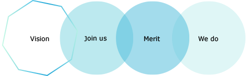

개발자와 디자니어를 위한 최고의 연합 IT 개발동아리 NEXTERS
연합동아리 넥스터즈는 IT 생태계의 주인공, 개발자와 디자이너를 위한 모임입니다.
넥스터즈는 재능있는 디자이너와 개발자들이 함께 어울리고, 각각의 프로젝트를 진행하며
협업을 통해 웹/모바일 어플리케이션을 만들고 마켓에 출품합니다.
현재수도권 인근에서 대학생들과 직장인들이 모여 활동하고 있습니다.
대학생은 실무경험과 노하우를 익히고 자신의 진로를 검증할 수 있는 기회가 주어질 것이며,
실무자는 자유로운 창작활동을 통해 부족했던 창의력을 키워나갈 수 있는 시간이 될 것 입니다.
넥스터즈는 재능있는 디자이너와 개발자들이 함께 어울리고, 각각의 프로젝트를 진행하며
협업을 통해 웹/모바일 어플리케이션을 만들고 마켓에 출품합니다.
현재수도권 인근에서 대학생들과 직장인들이 모여 활동하고 있습니다.
대학생은 실무경험과 노하우를 익히고 자신의 진로를 검증할 수 있는 기회가 주어질 것이며,
실무자는 자유로운 창작활동을 통해 부족했던 창의력을 키워나갈 수 있는 시간이 될 것 입니다.

운영회칙
넥터상징
넥터연혁
포트폴리오